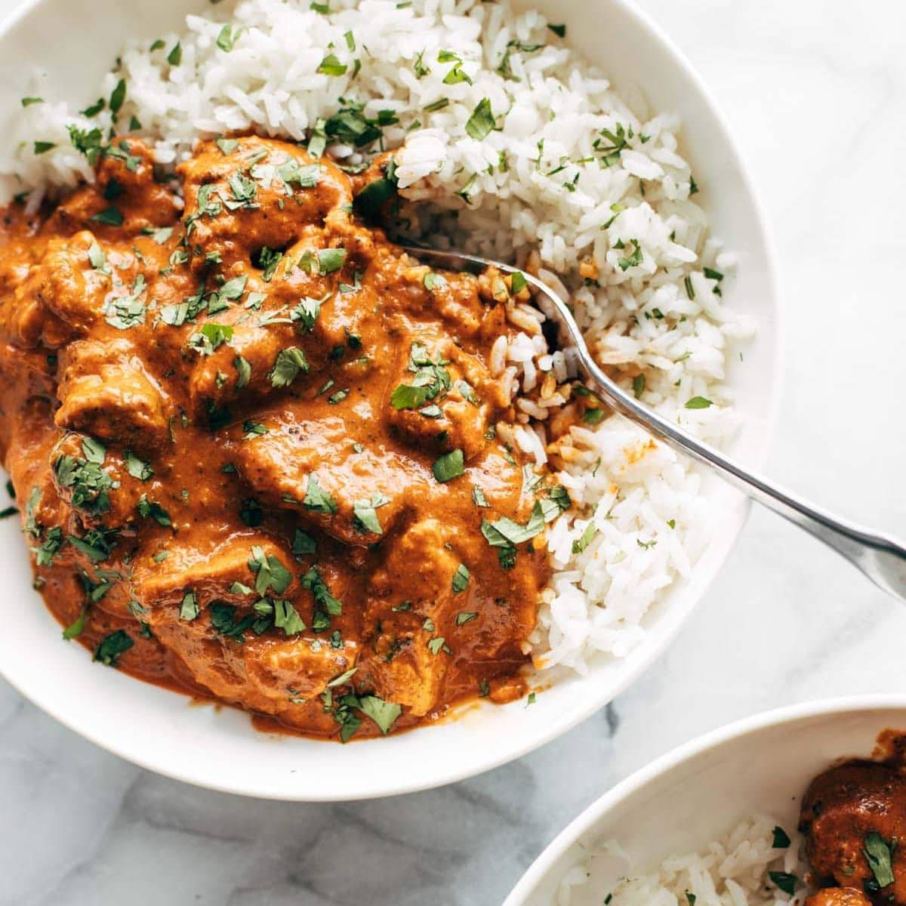

<< Back Home
Tikka Masala

Description
Tikka Masala is a traditional Indian dish made up of chicken that's been marinated in yogurt, charred and simmered in a rich, creamy tomato-based spiced sauce. The gorgeous color comes from Garam Masala, which is blend of cinnamon, black pepper, coriander, cumin, and cardamon. It has a subtle nutty and sweet, unique flavor.
- Boneless Chicken
- Heavy Whipping Cream
- Butter
- Tomato Sauce
- White Rice
- Garam Masala
- Coriander
- Basil
- Thyme
- Salt
- Pepper
- Paprika
- Cut chicken into peices about a half an inch thick.
- In a large bowl combine the tomato sauce with all the spices and mix well.
- Combine the chicken peices with the sauce and marinate in the refrigerator for at least 30 minutes
- Melt butter in a saucepan over medium heat, then add the chicken and sauce and cook for 15 minutes, stirring occasionally.
- Once chicken is cooked, add heavy whipping cream and stir until combined.
- Let cook for about 5 more minutes then serve warm with white rice.